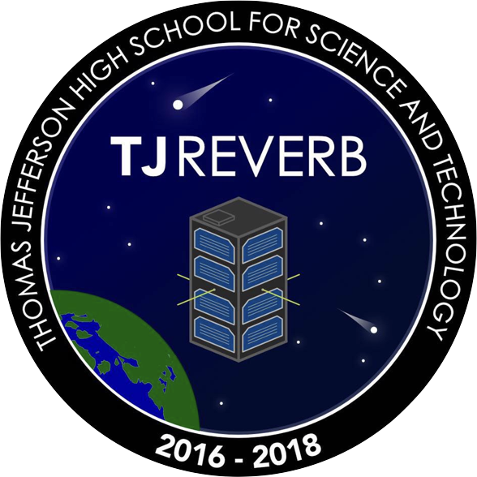
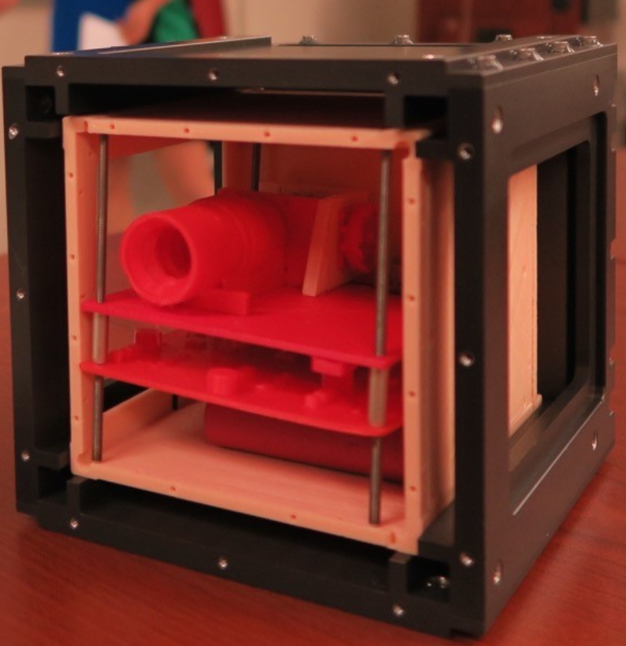
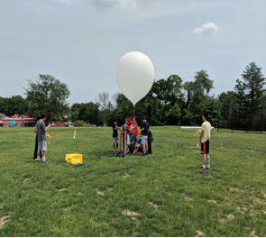
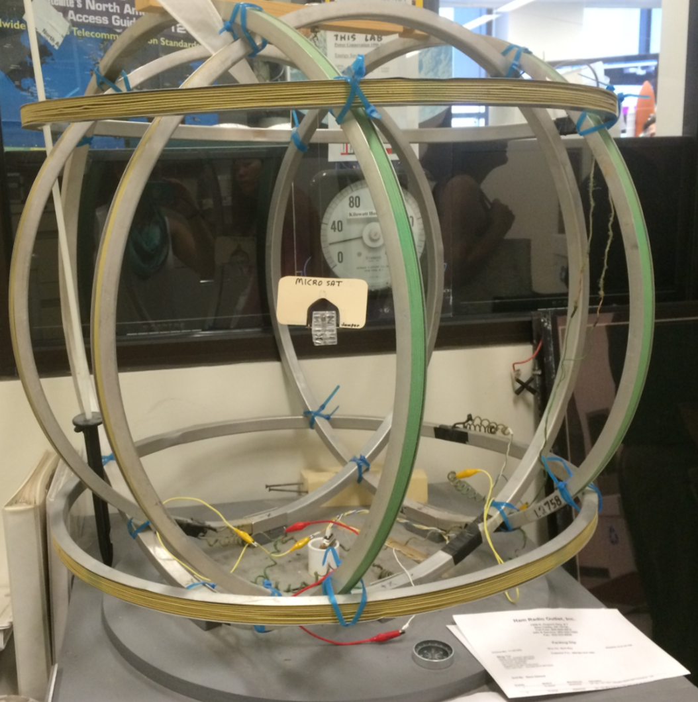

Mission Statement
The TJ REVERB project is creating a best practice document for building a Nanosatellite while building a 2U CubeSat that compares multiple radio systems in Lower Earth Orbit. Additionally, TJ REVERB serves as an educational vehicle for teaching students the principles of systems engineering. Beyond the rich learning experience designing and constructing a satellite provides the students at Thomas Jefferson HSST, the team is committed to a robust local, national, and international outreach program.What is a Cubesat?
In 1999, California Polytechnic Institute and Stanford University created the specifications for the CubeSat. It was determined that the one unit of a CubeSat would be 10cm x 10cm x 11.35 cm and usually no larger than 1.33 kilograms in mass. The initial purpose of the CubeSat program was to promote skills that were needed to send small satellites into Low Earth Orbit (LEO). Eventually, it developed into a concept of much broader use, ranging from experimental, commercial, and educational uses. Small satellites have become widely accepted as a part of the future in space.Mission Objectives
The TJ REVERB will compare multiple radio systems for the purpose of education and creating a best practices document.Project Objectives
- Design a CubeSat while staying within feasible RF, power, volume, mass, and cost budgets
- Apply for and be selected as a NASA CSLI Candidate
- Won NASA's CSLI Grant (February 2017)
- NASA selects 25-35 CubeSat proposals each year, to be selected the Merit Review and Feasibility Review must meet NASA's standards (Merit and Feasibility Review can be found in the "About Us" tab)
- Build, launch, and operate the TJ REVERB
- Maintain a robust outreach program
Important Mission Dates
- 2016: Create team and write proposal
- 2017: Plan mission and design CubeSat
- 2018:
- Q1 & Q2: Design CubeSat
- Q3: Weather Balloon Launch/Test Hardware
- Q4: Delivery of CubeSat

Media
| Design | Feasibility Presentation | Balloon Test Launch |
|---|---|---|
|  | 
|
 |
Education Objectives
The TJ REVERB project is an inherently educational endeavor for TJHSST students. Students do not regularly encounter such large scale and intensive group projects in the classroom. The TJ REVERB provides students the opportunity to learn how to function within subsystems and cooperate within a large team.- Train students in engineering of a CubeSat
- Develop and document the processes required
- Engage in STEM outreach programs
Subsystem Objectives
TJ students who are directly involved with the design and implementation of the satellite will learn how to function in smaller groups with specific tasks known as subsystems. Together these teams will cooperate inside and outside the classroom setting for TJ REVERB.Communciations
The Comms subgroup is primarily responsible for evaluating and handling the communications systems on the Cubesat. The 2U CubeSat (TJREVERB) is predicated on testing the communications systems onboard. On this CubeSat, we will be testing two types of radios: one simplex UHF radio and one duplex UHF/VHF radio. The subsystem is responsible for pre-testing the radios as well.
Attitude Determination and Control Systems (ADCS)
The Attitude Determination and Control Systems team develops simulations that will predict TJ REVERB’s orbit and attitude. Through the construction of a Helmholtz Coil, creation of control algorithms in MATLAB, and research into magnetorquer bars, the ADCS team makes sure that the satellite is successfully controlled while it is in orbit.Software
The Software subgroup exists to assist all other subgroups with any software related tasks. Our responsibilities include: maintaining the TJREVERB website to create awareness for TJREVERB, programming the flight computer of TJREVERB, performing TJREVERB outreach (programming focused or otherwise), and any other miscellaneous software-related tasks assigned to us by other groups.Outreach
The Outreach team is designed to bring the TJREVERB project to those outside of the team. It is part of NASA’s mission and our own. We will be performing documentation for the team, so that we have records of the decisions made and the reasoning behind them. The team’s primary goal is to organize a workshop for teams from local schools where they will build mock CubeSats and learn about our project.
Outreach Initiatives
- Trip to Naval Academy: To learn about their CubeSat Department and present a version of the proposal
- Trip to Goddard Space Center: To learn about NASA operations
- TJ Students presented to Korean exchange students
- Presentation at Holmes Run Middle School
- TJ Students presented at French high school while travelling
CAD
The CAD/Structural group will be focused more on creation of the 3U chassis (google “3U chassis cubesat” for more insight). For the 2U, we will be using AutoDesk Fusion and OnShape create a computer aided design. As we have recieved most of our parts, we have created computer models to simulate the components and how they will fit together.Key Hardware Components
- 2U Chassis (frame of CubeSat)
- Magnetorquers
- Solar panels
- Flight computer
- Iridium Radio (Short Burst Data modem)
- Automatic Packet Reporting System (APRS)
Testing
The purpose of the Thermal Control and Testing team is to ensure that the CubeSat survives in the environment of space. This includes ensuring that CubeSat internal components do not freeze or overheat due to the extreme cold and high heat fluxes in a Low Earth Orbit environment. Generally, the Thermal Control and Testing team requires information pertaining to the various electronic parts within the CubeSat, including their temperature tolerances and their respective efficiencies (to estimate heat output). Material specifics (thickness, type, etc.) are also necessary, for both vibration and thermal testing. To that end, the team will occasionally make contact with the other teams to determine these characteristics. While team members need not know how to conduct every type of testing, they should have some basic knowledge of mechanics and thermal physics. Knowledge of Autodesk Fusion 360 and MATLAB is also appreciated.

Electronics
The electronics subgroup of the TJ REVERB cubesat team helps test and manage the power supply, solar panels, attitude control, and overall power distribution of the Cubesat. Many of the electrical components will be donated to TJ from commercial partners. As such, a majority of the focus on the team will be connecting components and making sure that the system works correctly in an integrated manner. This will be accomplished through the development of a Helmholtz coil for testing attitude control, the construction of a clean room, and other electrical tests.

TJHSST
- Thomas Jefferson High School for Science and Technology is a Northern Virginia public magnet high school. The official site of TJHSST can be found here.
- In 2013, TJHSST became the first high school worldwide to succesfully launch a CubeSat into space, with the TJ3Sat project, which can be found here.
- 3 years later in 2016, the work on TJ's next satellite officially begun with TJ REVERB.
Emergent - Key Partner
Emergent Space Technologies has provided mentors and guidance to TJ’s CubeSat team. They trained two TJ students in a 5-week flight dynamics internship. Under the guidance of an experienced flight dynamics engineer, Dr. Sun Hur-Diaz, and other Emergent employees, they learned how to perform flight dynamics analysis for a 2U CubeSat using NASA’s General Mission Analysis Tool (GMAT). Skills the internship developed include determining ground track and tracking periods, developing orbit dynamics models, performing orbit determination simulations, and determining mission life time. Dr. Sun Hur-Diaz has also provided her expertise and feedback for the TJREVERB’s merit review and feasibility review which were a part of TJ’s CubeSat Launch Initiative proposal to NASA.
Ragnarok - Key Partner
Ragnarok Industries brings a wealth of Cubesat building knowledge to the TJREVERB team. Primarily, Ragnarok aids TJREVERB by providing avionics, comprised of the flight computer and its interfaces with the various radios, sensors, and other components on board the satellite. In addition, Ragnarok has mentored the team with respect to the design of the satellite, and was represented at TJREVERB's Merit and Feasibility reviews.
A Special Thanks to all our Sponsors
Without the help of these partners and sponsors, this project would not be possible
Companies
BlueCube
ExoAnalytic
NAL Research
USSTEM
 Apollo Level
Apollo Level Antonio Arancibia
Dana Cibulski
David Boyd
Mohammad Choudhry
Paul Jaffe
Pradeepa Jayakumar
The Trissell Family
Gemini Level
Jacob Cohen
Mary & Tim Keegan
 Mercury Level
Mercury Level Joy Bostian
Thomas Baron
Important Documents
- The Merit Review, which contains the outline and specifications of TJREVERB, can be found here.
- The Feasibility Review, which outlines the logistics and overall feasibility of the TJREVERB project, can be found here.
- The APRS Radio Guide which details the process of setting up the APRS radio, can be found here.

"This project has opened up innumerable possibilities for my future"
Team Leaders

Mike Piccione
TJ REVERB's Principal Investigator and Energy Systems and Engineering Labs Director
Shihao Cao
Project Manager - TJ '19Aumena Choudhry
Administrative - TJ '20Lucas Bronstein
Electronics - TJ '20
Madeleine Beauvais
Testing - TJ '19
Suchet Sapre
Website - TJ '20All Contributors - Click to Close
Jude Bedessem • Shihao Cao • Maxwell Lord • Kevin Zou • Daniel Wu
In loving memory of Felix W. Bedessem and Navi Bhandari. May the force be with you always.

Jude Bedessem
Communciations (Co-Leader) - TJ '19
Maguire Papay
Communciations (Co-Leader) - TJ '19Shihao Cao
Communciations (Co-Leader) - TJ '19
Dylan Jones
Software - TJ '19
Afreen Mohideen
Outreach (Co-Leader) - TJ '19
Amita Goyal
Outreach (Co-Leader) - TJ '20Quentin Bishop
ADCS - TJ '19
Arnold Zhang
CAD (Co-Leader) - TJ '19